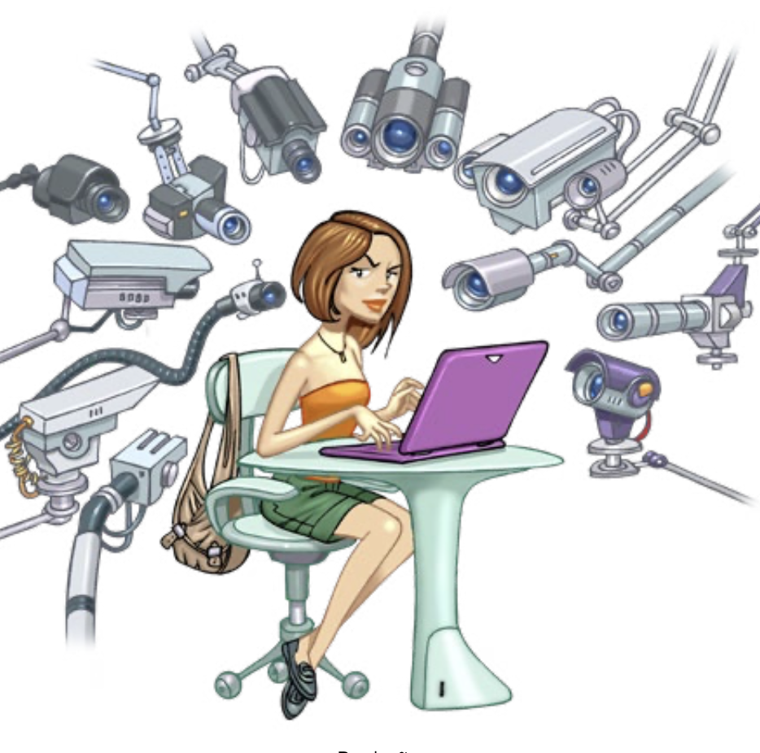
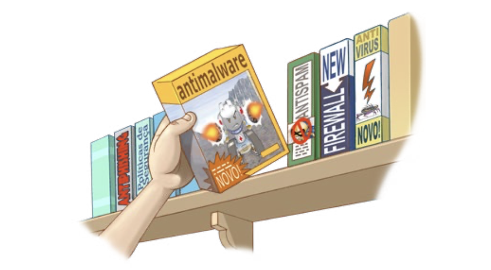
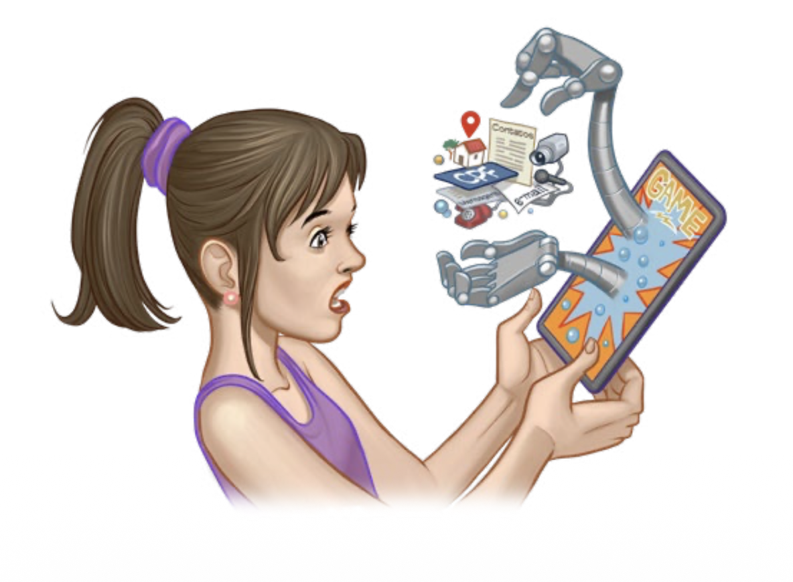
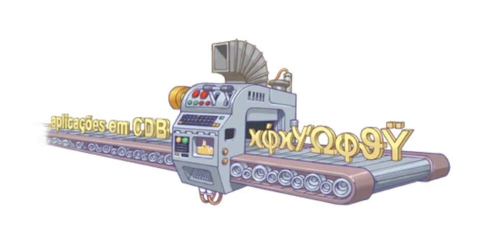

Valorize a sua Privacidade
Não é porque você não tem nada a esconder que precisa abrir mão de sua privacidade. A exposição excessiva e a coleta abusiva de dados podem dar a outros a capacidade de influenciar e limitar suas escolhas, além de facilitar a ação de pessoas mal-intencionadas.
Veja aqui dicas de como cuidar de sua privacidade e segurança na Internet.
Pense bem antes de postar algo
Depois que algo é enviado ou postado na internet, dificilmente pode ser apagado ou ter seu acesso controlado. Alguém pode já ter copiado e passado adiante. Lembre-se: uma vez postado, sempre postado.
- Não compartilhe conteúdo do qual possa se arrepender depois.
- Considere que você está em um local público: tudo o que você posta pode ser visto por alguém, tanto agora como no futuro.
Mantenha a intimidade offline
Fotos e vídeos íntimos podem ser usados para constranger e chantagear as pessoas que aparecem neles. É preciso tomar cuidado com imagens da intimidade. Lembre-se: a internet não guarda segredos.
- Evite compartilhar imagens ou se deixar filmar ou fotografar em situações íntimas.
- Apague fotos e vídeos antes de levar dispositivos para a assistência técnica.

Reduza a coleta de informações de navegação
Os sites que você acessa podem coletar informações de seu navegador para identificá-lo e rastreá-lo, saber por onde navega, suas buscas e escolhas. Desta forma, podem traçar seu perfil e oferecer conteúdos personalizados.
- Limite a coleta de dados configurando o navegador para não aceitar cookies de terceiros.
- Use o modo de navegação anônima, quando possível.

Configure a privacidade nas redes sociais
As redes sociais são os locais onde as pessoas mais expõem seus dados pessoais de forma voluntária. É fundamental controlar quem tem acesso ao que você publica.
- Configure o perfil como "privado" ou "apenas amigos" para limitar o alcance das publicações.
- Seja seletivo ao aceitar novos contatos e evite adicionar pessoas desconhecidas.
- Desative a geolocalização nas postagens.

Atenção com as permissões de aplicativos
Muitos aplicativos solicitam acesso a dados que não são necessários para o seu funcionamento real, como sua lista de contatos, câmera, microfone e localização.
- Leia atentamente as permissões exigidas antes de instalar qualquer aplicativo.
- Negue permissões que pareçam abusivas ou desnecessárias.
- Remova os aplicativos que você não utiliza mais.
